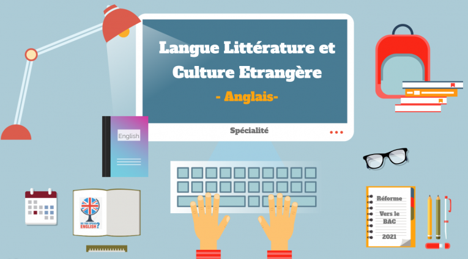

Mon orientation
J'ai passé mes années de primaire à Ars sur formans en région lyonnaise.
J'ai étudié au collège Jean moulin dans la commune de Trévoux pedant 2ans puis j'ai déménagé en Dordogne et j'ai passé mes deux dernières années de collège au collège Leroi Gourhan au Bugue.
J'étudie au Jay de Beaufort à Périgueux.
Langues, littératures et cultures étrangères
...
...
J'aimerais faire un métier dans le domaine du tourisme qui me permettrait de voyager en même temps. Pour cela je devrais faire une licence de tourisme et un BTS ce qui correspond à un BAC+3 ou +5.
mdescollonge@gmail.com
06 71 03 74 06